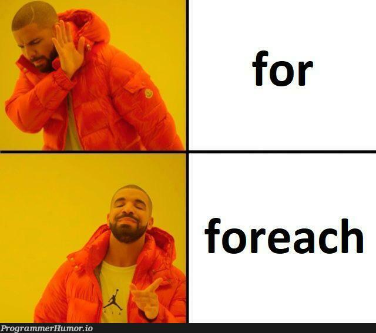
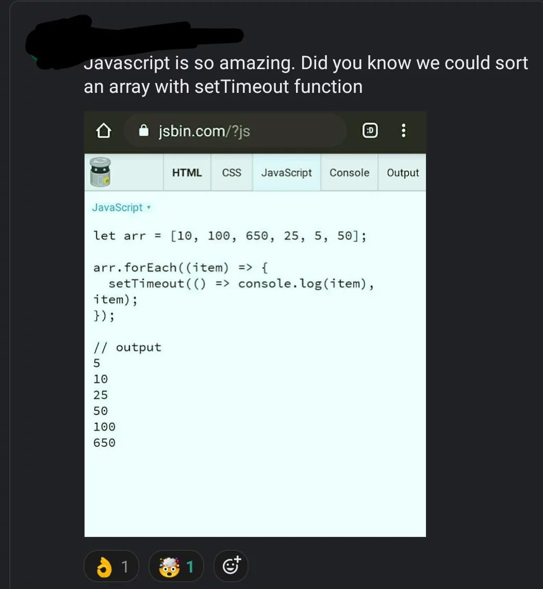

UNIDAD 3 - Arrays, Objectos... y Clases
1. Arrays
Un Array es un conjunto ordenado de valores relacionados. Cada uno de estos valores se llama un elemento, y cada elemento tiene un índice que indica su posición numérica en el Array. Debes declarar un Array antes de poder usarlo.
Puntos Clave:
- Elementos: Los valores individuales en un array.
- Índices: Posiciones numéricas de los elementos, comenzando desde 0.
- Declaración: Los arrays deben ser declarados antes de su uso.
1.1 Declaración de un Array
En JavaScript, hay dos formas principales de crear arrays:
- Usando el constructor
Array. - Usando la notación literal de arrays para definir el array y sus elementos.
1. Usando el Constructor Array
const a1 = new Array(); // Nuevo array vacío
console.log(a1.length); // Salida: 0
const a2 = new Array(4); // Nuevo array con 4 elementos
console.log(a2.length); // Salida: 4
// Nuevo array con 3 elementos definidos
const artist = new Array('Michael Jackson', 'Taylor Swift', 'David Bowie');
console.log(artist.length); // Salida: 3
// Rellenar a1 con valores aleatorios
for (let i = 0; i < 10; i++) {
a1[i] = Math.random();
}
console.log(a1.length); // Salida: 10
console.log(a2.length); // Salida: 4
console.log(artist.length); // Salida: 3
console.log(a1);
console.log(a2);
console.log(artist);
2. Usando la Notación Literal de Arrays
const artist2 = ['Michael Jackson', 'Taylor Swift', 'David Bowie'];
console.log(artist2.length); // Salida: 3
console.log(artist2); // Salida: ["Michael Jackson", "Taylor Swift", "David Bowie"]
console.log(artist2[0]); // Salida: Michael Jackson
1.2 Acceso a los Elementos del Array
Puedes acceder a los elementos en un array utilizando su índice. Los índices de los arrays comienzan en 0, así que el primer elemento está en el índice 0, el segundo elemento en el índice 1, y así sucesivamente.
Ejemplo de Acceso a los Elementos:
// Declarar un array
const colors = ["Red", "Green", "Blue", "Yellow"];
// Acceder a los elementos por índice
console.log(colors[0]); // Salida: Red
console.log(colors[1]); // Salida: Green
console.log(colors[2]); // Salida: Blue
console.log(colors[3]); // Salida: Yellow
// Acceder al último elemento usando la propiedad length
console.log(colors[colors.length - 1]); // Salida: Yellow
// Modificar un elemento por índice
colors[1] = "Purple";
console.log(colors); // Salida: ["Red", "Purple", "Blue", "Yellow"]
// Recorrer el array para acceder a cada elemento
colors.forEach(function(color, index) {
console.log(index + ": " + color);
});
// Salida:
// 0: Red
// 1: Purple
// 2: Blue
// 3: Yellow
1.3 Formas de Iterar sobre un Array
En JavaScript, hay varias formas de iterar sobre un array. Aquí están algunos de los métodos más comunes:
- Bucle
forTradicional - Bucle
for...of - Bucle
for...in - Método
forEach
1. Bucle for Tradicional
El bucle for tradicional es la forma más básica y flexible de iterar sobre un array.
const fruits = ["Apple", "Banana", "Cherry", "Date"];
for (let i = 0; i < fruits.length; i++) {
console.log(fruits[i]);
}
// Salida:
// Apple
// Banana
// Cherry
// Date
2. Bucle for...of
El bucle for...of se utiliza para iterar sobre los valores de un array.
3. Bucle for...in
El bucle for...in se utiliza para iterar sobre las propiedades enumerables de un objeto, pero también se puede usar para iterar sobre los índices de un array (no recomendado para arrays).
for (const index in fruits) {
console.log(fruits[index]);
}
// Salida:
// Apple
// Banana
// Cherry
// Date
4. Método forEach
El método forEach ejecuta una función de callback proporcionada una vez para cada elemento del array.
fruits.forEach((fruit, index) => {
console.log(index + ": " + fruit);
});
// Salida:
// 0: Apple
// 1: Banana
// 2: Cherry
// 3: Date

1.4 Propiedades de los Arrays
Los arrays en JavaScript vienen con varias propiedades integradas que proporcionan información y funcionalidades útiles. Aquí están dos de las propiedades más importantes:
1. length
La propiedad length de un array devuelve el número de elementos en el array.
2. prototype
La propiedad prototype permite agregar nuevas propiedades y métodos a todos los objetos array.
Array.prototype.first = function() {
return this[0];
};
console.log(fruits.first()); // Salida: Apple
1.5 Métodos Importantes de los Arrays
Los arrays en JavaScript vienen con una variedad de métodos integrados que proporcionan funcionalidades poderosas para manipular e interactuar con los elementos del array. Aquí están algunos de los métodos más importantes:
1. push
Agrega uno o más elementos al final de un array y devuelve la nueva longitud del array.
const fruits = ["Apple", "Banana"];
fruits.push("Cherry");
console.log(fruits); // Salida: ["Apple", "Banana", "Cherry"]
2. pop
Elimina el último elemento de un array y devuelve ese elemento.
const lastFruit = fruits.pop();
console.log(lastFruit); // Salida: Cherry
console.log(fruits); // Salida: ["Apple", "Banana"]
3. shift
Elimina el primer elemento de un array y devuelve ese elemento.
const firstFruit = fruits.shift();
console.log(firstFruit); // Salida: Apple
console.log(fruits); // Salida: ["Banana"]
4. unshift
Agrega uno o más elementos al principio de un array y devuelve la nueva longitud del array.
5. concat
Combina dos o más arrays y devuelve un nuevo array.
const moreFruits = ["Cherry", "Date"];
const allFruits = fruits.concat(moreFruits);
console.log(allFruits); // Salida: ["Apple", "Banana", "Cherry", "Date"]
6. slice
Devuelve una copia superficial de una porción de un array en un nuevo array objeto.
El último índice no está incluido. En el ejemplo tomamos del índice 1 al índice 3 (no incluido). Osea, el 1 y el 2.7. splice
Cambia el contenido de un array eliminando o reemplazando elementos existentes y/o agregando nuevos elementos.
allFruits.splice(2, 1, "Blueberry");
console.log(allFruits); // Salida: ["Apple", "Banana", "Blueberry", "Date"]
8. indexOf
Devuelve el primer índice en el que se puede encontrar un elemento dado en el array, o -1 si no está presente.
9. includes
Determina si un array incluye un cierto elemento, devolviendo verdadero o falso.
10. forEach
Ejecuta una función proporcionada una vez para cada elemento del array.
allFruits.forEach(function(fruit, index) {
console.log(index + ": " + fruit);
});
// Salida:
// 0: Apple
// 1: Banana
// 2: Blueberry
// 3: Date
11. map
Crea un nuevo array con los resultados de llamar a una función proporcionada en cada elemento del array.
const upperCaseFruits = allFruits.map(function(fruit) {
return fruit.toUpperCase();
});
console.log(upperCaseFruits); // Salida: ["APPLE", "BANANA", "BLUEBERRY", "DATE"]
12. filter
Crea un nuevo array con todos los elementos que pasan la prueba implementada por la función proporcionada.
const longNamedFruits = allFruits.filter(function(fruit) {
return fruit.length > 5;
});
console.log(longNamedFruits); // Salida: ["Blueberry"]
13. reduce
Ejecuta una función reductora en cada elemento del array, resultando en un solo valor de salida.
const totalLength = allFruits.reduce(function(accumulator, fruit) {
return accumulator + fruit.length;
}, 0);
console.log(totalLength); // Salida: 26
14. sort
Se utiliza para ordenar los elementos de un array en su lugar y devuelve el array ordenado. Cuando no se proporciona una función de comparación, sort() convierte cada elemento en una cadena y los ordena lexicográficamente (orden de diccionario).
-
Ordenar sin una Función de Comparación
-
Ordenar con una Función de Comparación
Fuente: MDN Web Docs
¡Boom!

Ejercicio Práctico: Manipulación de Arrays con `map`
Crea una página web que calcule el cuadrado de cada número en un array y muestre los resultados.
2. Objetos
JavaScript está diseñado con un paradigma simple basado en objetos. Un objeto es una colección de propiedades, donde una propiedad es una asociación entre un nombre (o clave) y un valor.
El valor de una propiedad puede ser una función, en cuyo caso la propiedad se conoce como un método.
Además de los objetos predefinidos en el navegador, puedes definir tus propios objetos.
Fuente: https://developer.mozilla.org/en-US/docs/Web/JavaScript/Guide/Working_with_objects
Puntos Clave:
- Propiedades: Asociaciones entre un nombre (clave) y un valor.
- Métodos: Funciones que son propiedades de los objetos.
- Objetos Personalizados: Objetos definidos por el usuario además de los objetos definidos por el navegador.
2.1 Declarando Objetos
En JavaScript, hay dos formas principales de crear objetos:
- Usando el constructor
Objecty luego añadiendo propiedades. - Usando la notación de literal de objeto para definir el objeto y sus propiedades directamente.
1. Usando el Constructor Object
Puedes crear un objeto vacío usando el constructor Object y luego añadir propiedades a él.
// Crear un objeto vacío usando el constructor Object
const myCar = new Object();
// Añadir propiedades al objeto
myCar.make = "Ford";
myCar.model = "Mustang";
myCar.year = 1969;
// Acceder a las propiedades
console.log(`Make: ${myCar.make} Model: ${myCar.model}`);
2. Usando la Notación de Literal de Objeto
Puedes definir el objeto y sus propiedades directamente usando la notación de literal de objeto, que es más concisa y fácil de leer.
// Crear un objeto con notación literal
const myCar2 = {
make: 'Seat',
model: '600',
year: '1965'
}
// Acceder a las propiedades
console.log(`Make: ${myCar2.make} Model: ${myCar2.model}`);
Crear un Objeto con Métodos:
// Definir un objeto usando notación literal de objeto
const person = {
firstName: "John",
lastName: "Doe",
age: 30,
// este es un método:
greet: function() {
console.log("Hello, " + this.firstName + " " + this.lastName);
}
};
// Acceder a las propiedades y llamar al método
console.log(person.firstName); // Salida: John
// Llamar al método
person.greet(); // Salida: Hello, John Doe
2.2 Funciones Constructoras e Instancias de Objetos
En JavaScript, puedes crear una función constructora para definir la estructura y el comportamiento de los objetos. Luego, puedes crear instancias del objeto usando la palabra clave new.
// Definir una función constructora
function Person(firstName, lastName, age) {
this.firstName = firstName;
this.lastName = lastName;
this.age = age;
this.greet = function() {
console.log("Hello, " + this.firstName + " " + this.lastName);
};
}
// Crear instancias del objeto Person
const person1 = new Person("John", "Doe", 30);
const person2 = new Person("Jane", "Smith", 25);
// Acceder a las propiedades y llamar a los métodos
console.log(person1.firstName); // Salida: John
person1.greet(); // Salida: Hello, John Doe
console.log(person2.firstName); // Salida: Jane
person2.greet(); // Salida: Hello, Jane Smith
3. Clases en JavaScript
Desde ES6 (ECMAScript 2015), JavaScript admite la sintaxis de clases, permitiendo un estilo de programación orientado a objetos más tradicional. Aquí están algunas características clave de las clases ES6:
Declaración de Clase con Constructor
Las clases en JavaScript pueden tener un método constructor, que es un método especial para inicializar instancias de la clase con ciertas propiedades.
class Car {
constructor(brand, model) {
this.brand = brand;
this.model = model;
this.mileage = 0;
}
}
Métodos Setter y Getter
Las clases ES6 también admiten métodos setter y getter usando las palabras clave set y get, respectivamente, permitiendo el acceso controlado a las propiedades del objeto.
class Car {
constructor(brand, model) {
this._brand = brand;
this._model = model;
this._mileage = 0;
}
// Método regular
drive(distance) {
this._mileage += distance;
console.log(`Driving ${distance} miles in ${this._brand} ${this._model}.`);
}
// Método getter
get mileage() {
return this._mileage;
}
// Método setter
set mileage(value) {
if (value >= 0) {
this._mileage = value;
} else {
console.error("Mileage cannot be negative.");
}
}
}
// Crear una instancia de Car
const myCar = new Car("Toyota", "Corolla");
// Llamar al método regular para conducir
myCar.drive(50);
myCar.drive(30);
// Acceder al kilometraje usando el método getter
console.log(`Total mileage: ${myCar.mileage} miles.`);
4. Arrays de Objetos (aqui no arreglamos nada)
En JavaScript, los arrays pueden contener una colección de objetos. Cada objeto dentro del array puede tener sus propias propiedades y métodos, lo que permite una organización y manipulación estructurada de los datos.
// Definir un array de objetos (array de coches)
let cars = [
{ brand: "Toyota", model: "Corolla", year: 2020 },
{ brand: "Honda", model: "Civic", year: 2019 },
{ brand: "Ford", model: "Mustang", year: 2021 }
];
// Acceder a los objetos en el array
console.log(cars[0]); // Salida: { brand: "Toyota", model: "Corolla", year: 2020 }
// Añadir un nuevo objeto al array
cars.push({ brand: "Tesla", model: "Model S", year: 2022 });
// Modificar un objeto en el array
cars[1].year = 2020;
// Eliminar un objeto del array
cars.splice(2, 1); // Elimina el objeto en el índice 2
// Iterar sobre el array de objetos
cars.forEach(function(car) {
console.log(`${car.brand} ${car.model} (${car.year})`);
});
5. Notación JSON
JSON (JavaScript Object Notation) es un formato ligero de intercambio de datos que es fácil de leer y escribir para los humanos, y fácil de analizar y generar para las máquinas. Se utiliza ampliamente como formato para intercambiar datos entre un servidor y una aplicación web, y es un formato de datos estándar con muchos lenguajes de programación.
Sintaxis
- Datos en pares nombre/valor: Los datos JSON se representan como pares clave-valor.
- Datos separados por comas: Los datos JSON se separan por comas.
- Llaves que contienen objetos: Los datos JSON están encerrados en llaves
{}para denotar objetos. - Corchetes que contienen arrays: Los arrays JSON están encerrados en corchetes
[].
{
"firstName": "John",
"lastName": "Doe",
"age": 30,
"isStudent": false,
"address": {
"streetAddress": "123 Main Street",
"city": "Anytown",
"state": "CA",
"postalCode": "12345"
},
"phoneNumbers": [
{ "type": "home", "number": "555-1234" },
{ "type": "work", "number": "555-5678" }
]
}
Puntos Clave
- Tipos de Datos: JSON admite cadenas, números, objetos, arrays, booleanos y valores nulos.
- Formato Universal: JSON es independiente del lenguaje de programación, lo que lo hace adecuado para el intercambio de datos.
- Parseo y Serialización: JSON puede ser convertido en objetos JavaScript usando
JSON.parse()y convertido de nuevo a JSON usandoJSON.stringify().
Uso
- APIs Web: Muchas APIs web utilizan JSON para enviar datos entre servidores y navegadores web.
- Archivos de Configuración: JSON se utiliza en archivos de configuración debido a su formato legible.
- Almacenamiento de Datos: JSON se utiliza para almacenar e intercambiar datos estructurados en bases de datos y aplicaciones.
Ejemplo de Parseo y Serialización de JSON
// Objeto con múltiples atributos, incluyendo un array de objetos
let user = {
name: "John Doe",
age: 35,
address: {
street: "Main Street",
city: "New York",
country: "USA"
},
orderHistory: [
{ id: 1, product: "Smartphone
", quantity: 1 },
{ id: 2, product: "Tablet", quantity: 2 },
{ id: 3, product: "Laptop", quantity: 1 }
]
};
// Convertir a JSON usando JSON.stringify()
let jsonUser = JSON.stringify(user);
console.log("Objeto convertido a JSON:");
console.log(jsonUser);
// Convertir de vuelta a objeto usando JSON.parse()
let parsedObject = JSON.parse(jsonUser);
console.log("\nJSON convertido de vuelta a objeto:");
console.log(parsedObject);